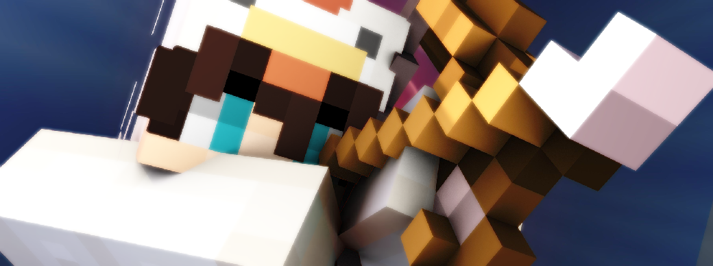
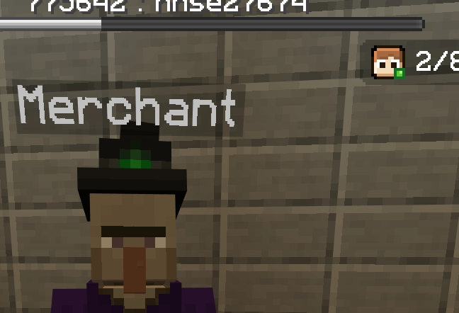
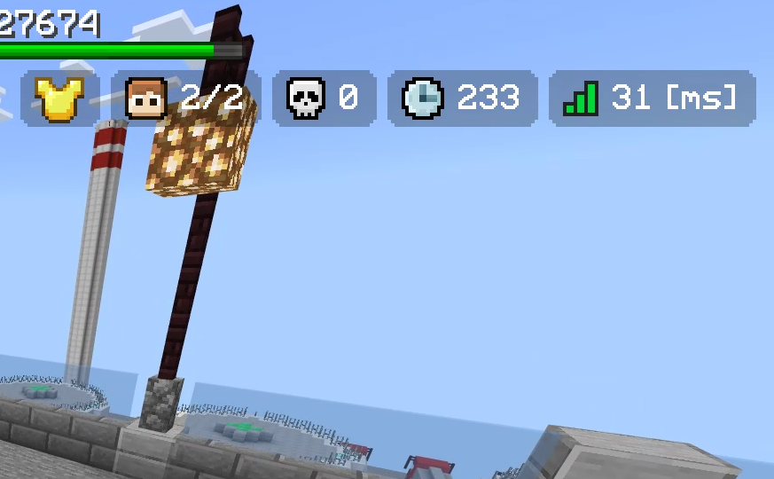
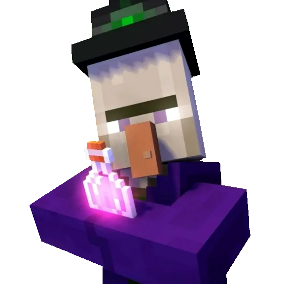
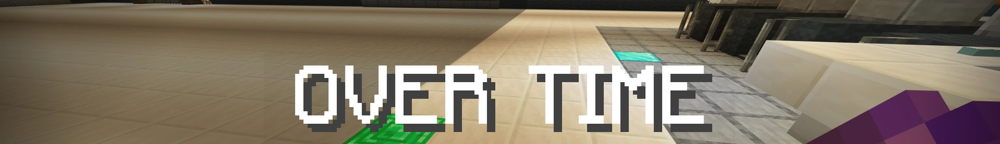
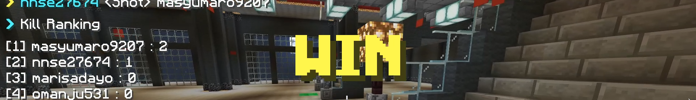

フェージング「Phasing」

フェージングは、BowyersMCのメインゲームです。
唯一カルマの賭けが行え、ティアの上昇を目指せます。
すべての敵を倒し切り、最後の一人になることが目標のモードです。
フェーズ
エントリー

エントリーのフェーズです。
エントリールームにて好きなウェポンをセレクターを利用して選択できます。
選べるウェポンは、サプライウェポン以外の開放済みのウェポンに限ります。
また、エントリー時に設定されているウェポンは「お気に入りのウェポン」が設定されます。よく使うウェポンは、お気に入りに設定しておくことをお勧めします。
すべてのエントリールームには商売人がいます。
左クリックで攻撃するとサプライウェポンのメニューが開き、ゲーム内でランダムに支給されるウェポンのプールへの登録ができます。
あまりリクエストをする人がいなければいないほど、確率が上がるので是非利用しましょう。
プリパレ―ション

戦闘準備のフェーズです。
プレイヤーが透明化つきの状態で一点からスポーンします。
この時ウェポンは移動系のものとパラレルのみ利用できます。
パーティクルやエフェクトが出てしまうため、位置バレの恐れはありますが、場所とりで役立てましょう。
この準備フェーズでは、全プレイヤーの利用しているウェポンの種類と数が確認できるほかに、商売人がランダム渡すサプライウェポンのプールが公開されます。
透明化が10秒後に消えるので、それまでに臨戦態勢を整えましょう。
メインプレイ

メインフェーズです。
ゲームが開始されてから、半分が経過するとサプライウェポンを渡す「商売人」が現れます。
破格の性能を誇るウェポンを、うまく活用してゲームを優位に進めましょう。
アリーナはバリアブロックで周りがふさがれていないため、落下の危険性があるので注意が必要です。
ノックバックを発生させるウェポンには特に注意しましょう。
商売人

ゲームが開始後半分が経過するとスポーン地点に現れます。
最初に攻撃したプレイヤーへサプライウェポンを差し出します。
素手で攻撃しても、弓で射貫いても商売人は反応してくれます。
オーバータイム

延長戦のフェーズです。
一度スポーン地点に集められ、透明化の時間を経て再びゲームが開始します。
オーバータイムではアリーナの区画が狭められ、場所によっては景観が変わっていたりします。
黒い色付きガラスで周りがふさがれているため、基本的に落下はしません。
ブロックの破壊が行われると、周りの黒ガラスも全て消え去ります。
充分に注意を払って、狭められた空間で決着をつけてください。
エンド

ゲーム終了のフェーズです。
勝敗結果と、キル数のランキングが表示されます。
ゲーム自体、脱落したプレイヤーは観戦せずに退室することが可能ですが、このリザルト画面には退室したプレイヤーの記録も確認できます。
終了時には勝者のイミテイトが剥がされ、纏っていたプレイヤーのスキンに戻ります。
勝ち負け判定
・単独生存
正真正銘のひとり勝ちです。
このパターンでのみ、プレイヤーは勝利カルマを獲得できます。
・複数生存で時間切れ
引き分けになります。
・相撃ちによる全滅
全員が敗者の判定になります。
ベット
あるウェポンでティアONEを超えると、以降このウェポンを使うときにカルマのベットを行えるようになります。
エントリー中に手持ちの経験値ボトルを使うことで、ベットの切り替え及び設定が可能になります。
詳しいベット額の設定はこちらを参照
内訳は以下の通りです。
ゲームへの勝利
単独生存や敵全滅によるひとり勝ちの場合、10カルマがもらえます。
この場合のみベット額分のカルマも返還されます。
賭けをしていなくても、賭けていたプレイヤーを倒していた場合、そのベット額を奪えます。
ゲームへの敗北
ベット額分のカルマが失われます。
キル
キルした人数分のベット額がもらえます。
ベットしていた場合、(キル数)×(ベット額)が付与されます。